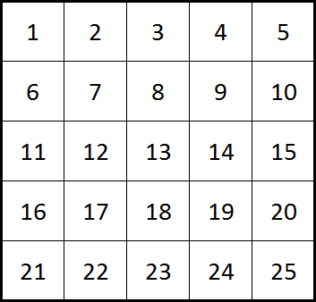
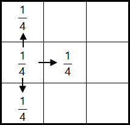
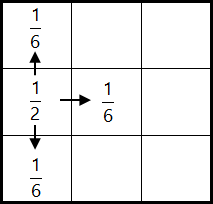

Project Euler 575
Project Euler 575
题目
Wandering Robots
It was quite an ordinary day when a mysterious alien vessel appeared as if from nowhere. After waiting several hours and receiving no response it is decided to send a team to investigate, of which you are included. Upon entering the vessel you are met by a friendly holographic figure, Katharina, who explains the purpose of the vessel, Eulertopia.
She claims that Eulertopia is almost older than time itself. Its mission was to take advantage of a combination of incredible computational power and vast periods of time to discover the answer to life, the universe, and everything. Hence the resident cleaning robot, Leonhard, along with his housekeeping responsibilities, was built with a powerful computational matrix to ponder the meaning of life as he wanders through a massive \(1000\) by \(1000\) square grid of rooms. She goes on to explain that the rooms are numbered sequentially from left to right, row by row. So, for example, if Leonhard was wandering around a \(5\) by \(5\) grid then the rooms would be numbered in the following way.

Many millenia ago Leonhard reported to Katharina to have found the answer and he is willing to share it with any life form who proves to be worthy of such knowledge.
Katharina further explains that the designers of Leonhard were given instructions to program him with equal probability of remaining in the same room or travelling to an adjacent room. However, it was not clear to them if this meant (i) an equal probability being split equally between remaining in the room and the number of available routes, or, (ii) an equal probability (\(50\%\)) of remaining in the same room and then the other \(50\%\) was to be split equally between the number of available routes.

(i) Probability of remaining related to number of exits

(ii) Fixed 50% probability of remaining
The records indicate that they decided to flip a coin. Heads would mean that the probability of remaining was dynamically related to the number of exits whereas tails would mean that they program Leonhard with a fixed \(50\%\) probability of remaining in a particular room. Unfortunately there is no record of the outcome of the coin, so without further information we would need to assume that there is equal probability of either of the choices being implemented.
Katharina suggests it should not be too challenging to determine that the probability of finding him in a square numbered room in a \(5\) by \(5\) grid after unfathomable periods of time would be approximately \(0\).\(177976190476\) [\(12\) d.p.].
In order to prove yourself worthy of visiting the great oracle you must calculate the probability of finding him in a square numbered room in the \(1000\) by \(1000\) lair in which he has been wandering.
(Give your answer rounded to \(12\) decimal places)
解决方案
令\(N=10^3.\)把每个房间视为状态，机器人移动给出一个有限状态马尔可夫链。因为两条规则都允许原地不动（概率 \(>0\)），链是非周期的；格子连通，链也不可约，因此稳态分布唯一。令某房间（格点）在网格图中的邻居数为\(d(v)\in\{2,3,4\},\)分别对应角点、边界（非角）、内部。
关键是求两条规则各自的稳态分布 \(\pi^{(1)}(v),\pi^{(2)}(v)\)，以及平方数房间集合 \(S\) 上的概率和。
规则 (i) 下，从 \(v\) 出发有 \(d(v)\) 个邻居 + “留在原地”这一项，共 \(d(v)+1\) 个等概率选项： \[ P^{(1)}(v\to u)= \begin{cases} \dfrac1{d(v)+1}, & u=v\lor u\sim v,\\ 0,&\text{otherwise}. \end{cases} \]
把每条相邻边视作权重 1 的无向边，再给每个点加一条自环权重 1。此时对任意相邻点 \(u\sim v\)，有对称性\(P^{(1)}(v\to u)=\dfrac{1}{d(v)+1}, P^{(1)}(u\to v)=\dfrac{1}{d(u)+1}.\)若令\(\pi^{(1)}(v)\propto d(v)+1,\)则对任意相邻（含自环）转移都满足细致平衡：\(\pi^{(1)}(v)P^{(1)}(v\to u)\propto(d(v)+1)\cdot\dfrac{1}{d(v)+1}=1,\)并且对称地等于 \(\pi^{(1)}(u)P^{(1)}(u\to v)\)。因此 \(\pi^{(1)}\) 为稳态分布。
于是角点/边界/内部三类点的稳态概率只与 \(d+1\) 有关，比例为 \(3:4:5\)。接着求归一化常数。三类点个数分别为：角点：\(4\)，边界非角：\(4(N-2)\)，内部：\((N-2)^2\)。因此\(\displaystyle\sum_{v=1}^{N^2} (d(v)+1)=4\cdot 3+4(N-2)\cdot 4+(N-2)^2\cdot 5=5N^2-4N=N(5N-4).\) 所以规则 (i) 下，有：
\[ \pi^{(i)}(v)= \begin{cases} \dfrac{3}{N(5N-4)}, & v\in C,\\ \dfrac{4}{N(5N-4)}, & v\in B,\\ \dfrac{5}{N(5N-4)}, & v\in I. \end{cases} \]
其中 \(C\) 表示四个角点集合，\(B\) 表示边界但非角点的集合，\(I\) 表示内部点集合。
在规则 (ii) 下：以 \(1/2\) 原地不动；以 \(1/2\) 在 \(d(v)\) 个邻居间均分。即\(P^{(2)}(v\to v)=\dfrac12,P^{(2)}(v\to u)=\dfrac{1}{2d(v)}(u\sim v).\)
用加权无向图刻画它：令每条相邻无向边权重为 1，令点 \(v\) 的自环权重为 \(d(v)\)。那么从 \(v\) 出发的总权重为\(w(v)=d(v)+d(v)=2d(v),\)转移概率为权重占比：\(P^{(2)}(v\to v)=\dfrac{d(v)}{2d(v)}=\frac12,P^{(2)}(v\to u)=\dfrac{1}{2d(v)}.\)由于相邻边权对称（都是 1），按同样的细致平衡验证可得稳态分布满足\(\pi^{(2)}(v)\propto w(v)=2d(v)\Longleftrightarrow\pi^{(2)}(v)\propto d(v).\)因此三类点概率比例为 \(2:3:4\)。
再求归一化常数 \(\displaystyle \sum_{v=1}^{N^2} d(v)\)。网格图的无向边数为\(E=2N(N-1)\)，因为竖直和水平方向上各有\(N(N-1)\)条边。所以\(\displaystyle\sum_{n=1}^{N^2} d(v) = 2E = 4N(N-1).\)从而规则 (ii) 下，有：
\[ \pi^{(2)}(v)= \begin{cases} \dfrac{2}{4N(N-1)}, & v\in C,\\ \dfrac{3}{4N(N-1)}, & v\in B,\\ \dfrac{4}{4N(N-1)}, & v\in I. \end{cases} \]
平方数编号房间为\(S=\{m^2\mid 1\le m\le N\},\)共 \(N\) 个（因为 \(N^2\) 是最大编号）。
令\(m_c\)表示平方数房间落在角点的个数；\(m_b\)表示平方数房间落在边界非角的个数；\(m_i\)表示平方数房间落在内部的个数；
则\(m_c+m_b+m_i=N.\)将房间号 \(k\) 映射到坐标（行列从 1 开始）：\(r=\left\lfloor\dfrac{k-1}{N}\right\rfloor+1, c=(k-1)\bmod N + 1.\) 对 \(k=m^2\)，其列坐标等价于 \(m^2\bmod N\)（余数 0 对应 \(c=N\)），因此左边界对应\(m^2\equiv 1\pmod N,\)右边界对应\(m^2\equiv 0\pmod N.\)
再看第一行：当 \(m^2\le N\) 时在第一行。令\(q=\lfloor \sqrt{N} \rfloor,\)则第一行的平方数房间对应 \(m=1,2,\dots,q\)。角点中必然有 \(1\)（左上角）与 \(N^2\)（右下角）。另外右上角房间号为 \(N\)，只有当 \(N\) 本身为完全平方数时才额外贡献一个角点平方数。左下角\(N^2-N+1\)一定不是平方数。因此\(m_c = 2 + \mathbf{1}\{q^2=N\}.\)
接下来统计边界平方数（非角）。把边界平方数分解成三部分：
- 第一行（不含角）：共有 \(q\) 个平方数，其中 \(m=1\) 是角；若 \(q^2=N\) 则 \(m=q\) 对应右上角也是角。故第一行非角平方数个数为\((q-1)-\mathbf{1}\{q^2=N\}.\)
- 左边界（不含角）：令\(e(N)=\#\{m\in[1,N]\mid m^2\equiv 1\pmod N\},\)其中 \(m=1\) 对应左上角已是角点，其余都落在左边界非角位置（不会与第一行平方数重叠，除角点外）。故贡献\(e(N)-1.\)
- 右边界（不含角）：令\(d(N)=\#\{m\in[1,N]\mid m^2\equiv 0\pmod N\}.\)其中 \(m=N\) 对应 \(N^2\)（右下角）为角点；若 \(q^2=N\) 则 \(m=q\) 对应右上角 \(N\) 也是角点。故右边界非角贡献\(d(N)-1-\mathbf{1}\{q^2=N\}.\)
- 下边界一定不含怕平方数，因为\(N^2\)的前一个平方数\((N-1)^2\)必定不在最后一行。
因此三者相加得到
\[m_b = \bigl((q-1)-\mathbf{1}\{q^2=N\}\bigr) + (e-1) + \bigl(d-1-\mathbf{1}\{q^2=N\}\bigr)= d(N)+e(N)-2m_c+q+1.\]
最后\(m_i = N - m_c - m_b.\)
设\(N\)的质因子分解为\(\displaystyle N=\prod_{i=1}^t p_i^{a_i}.\)条件 \(m^2\equiv 0\pmod{p_i^{a_i}}\) 等价于 \(v_{p_i}(m)\ge \lceil a_i/2\rceil\)。因此 \(m\) 必须是\(\displaystyle M=\prod_{i=1}^t p_i^{\lceil a_i/2\rceil}\)的倍数。区间 \(1\le m\le N\) 内这样的数个数为 \(N/M\)，即\(\displaystyle d(N)=\prod_{i=1}^t p_i^{\lfloor a_i/2\rfloor}.\)
接下来计算\(e(N)\)。用中国剩余定理，解的个数对互素模数相乘。因此只需知道对素数幂的解数：若 \(p\) 为奇素数，则 \(x^2\equiv 1\pmod{p^a}\) 只有两解 \(x\equiv \pm 1\)，因此解数为 \(2\)。若模为 \(2^a\)，解数为：\(a=1\)：1 个（只有 \(1\)）；\(a=2\)：2 个（\(1,3\)）；\(a\ge 3\)：4 个（\(\pm 1,\pm(1+2^{a-1})\)）
对每个素数幂因子 \(p_i^{a_i}\)，先计算同余方程 \(x^2\equiv 1\pmod{p^a}\) 的解数（奇素数恒为 \(2\)；\(2^a\) 的解数随 \(a\) 变化），再把各部分相乘得到 \(e(N)\)。因此
\[ e(N)=\prod_{i=1}^t g(p_i,a_i), g(p,a)= \begin{cases} 2,& p\ne 2,\\ 1,& p=2, a=1,\\ 2,& p=2, a=2,\\ 4,& p=2, a\ge 3. \end{cases} \]
最后总概率有：\(P_1=\dfrac{3m_c+4m_b+5m_i}{N(5N-4)},P_2=\dfrac{2m_c+3m_b+4m_i}{4N(N-1)},P=\dfrac{P_1+P_2}{2}.\)
代码
1 | from fractions import Fraction |